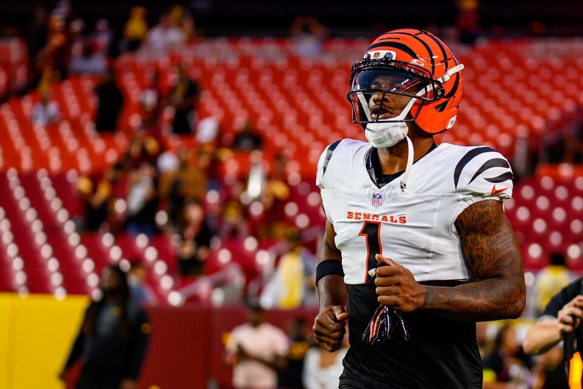

Week 9
Power Rankings
Our bottom five beat our top five in week 8. TheSoop stays first, derrek777 and ProfessorMerlyn climb three, and OneManEra and brunosilvadev fall four on the two thinnest healthy rosters in the league.

Ja'Marr Chase: All-Pro Reels / CC BY-SA 4.0
Marking our own homework
Four and six
This was our worst week. Our top five went 4-6 in week 8 and our bottom five went 6-4. ceefry, KnightRider_85 and OneManEra, our second, fourth and fifth, all went 0-2, and derrek777, evspade and ProfessorMerlyn, our seventh, eighth and tenth, all went 2-0. Week 8 had no splits at all: five teams won both results and five lost both, so every ranking was either right twice or wrong twice.
The three disagreements with the table came out better. We had TheSoop first over table-leading ceefry, and TheSoop went 2-0 while ceefry went 0-2. We had KnightRider_85 last of the three 9-5 teams, and he was the only one of them to lose. We had derrek777 above evspade, and both went 2-0.
The ten
Week 9
Who Dey and the Blowfish · TheSoop · 11-5
Beat CaptainClark 155.44 to 131.76. Joe Burrow scored 42.48, the best score by any player in the league this week, Josh Allen came back from his bye with 28.06, and Chuba Hubbard added 23.90. The lineup also had Tre Tucker and Zay Flowers in it for 0.00 between them, while Harold Fannin scored 21.40 on the bench, and his best possible lineup was 198.40. The gap of 42.96 is the largest in the league. He is first in healthy per-game strength by 9.7 points and level with geauxjack at 11-5, behind only on points. David Montgomery is still listed out.
Irrational Exuberance! · geauxjack · 11-5
Scored 174.30, the week's high, and beat ceefry by 63.20, the week's widest margin. Ja'Marr Chase scored 28.60, Tony Pollard 28.20 against Chase's own team, and the Commanders defence, added that week, scored 20.00. D'Andre Swift scored 28.40 on his bench. He shares first place with TheSoop and leads the league in points scored at 1283.6. His healthy per-game strength is second. This week Pollard is on bye and Mike Evans and Kyle Monangai are listed out, and Sleeper still projects him for 176.3, third in the league.
Fryder-Man: Brand New Day · ceefry · 10-6
Lost to geauxjack by 63.20 with 111.10. Brock Bowers scored 26.20 and Jaylen Warren 23.80, and the two quarterback slots scored 3.60 between them, the least in the league. Lamar Jackson started, is credited with one pass attempt, and scored 0.00; Michael Penix scored 3.60 at superflex with Tyler Shough on bye. He dropped J.J. McCarthy afterwards and is down to four quarterbacks. Lamar is listed out again, Penix and Baker Mayfield are both in Sleeper's projected lineup, and Sleeper projects ceefry for 179.0 this week, the most in the league. One result out of first.
4th and 35 · derrek777 · 7-9
Beat brunosilvadev by 47.62 with 156.34. Jahmyr Gibbs scored 27.80, Michael Wilson 25.30, and the Jaguars defence, a waiver claim that week, 24.00. Rachaad White, whom our preview named as the best free agent on Sleeper's projections, was claimed by derrek777 and scored 14.00 in his lineup. Jordan Love scored 22.52 on the bench while Jacoby Brissett scored 4.96 at superflex, which cost points and no result. His healthy roster projects first in the league on season numbers and his healthy per-game strength is third. He is one result behind the two 8-8 teams in fifth and sixth, and plays ceefry for the first time.
Willis’s Willies · KnightRider_85 · 9-7
Made the league's first trade since 2023, sending Malik Willis and AJ Barner to brunosilvadev for Aaron Jones Sr. and T.J. Hockenson, which we have written up separately. Then he lost to evspade by 37.52 with 111.66. Jaxon Smith-Njigba scored 23.30 and Sam Darnold 18.52. Hockenson scored 14.80 on the bench behind a tight end who scored 2.70, and Breece Hall started for the third straight week and scored 0.00 for the third straight week. With Hall removed, his per-game strength drops from fourth to fifth. Sleeper projects him for 176.4 this week, second in the league, against ProfessorMerlyn, who is 4-2 against him all time.
LeBron Offensive Foul · evspade · 8-8
Beat KnightRider_85 by 37.52 with 149.18. The Steelers defence scored 31.00, Kyler Murray 21.40 and Bo Nix 19.78. Tyler Allgeier scored 36.10 on his bench, the best bench score in the league this week. The defending champion is 8-8 and sixth, which is the last playoff place, and his healthy roster is second in the league on season projections. Week 9 is the problem: the Steelers are on bye, which takes his kicker and defence with them, Murray is listed questionable, and Sleeper projects him for 154.9, the lowest in the league.
Rancor Fajitas · ProfessorMerlyn · 6-10
Beat OneManEra 159.50 to 144.84, the second-highest score of the week. Patrick Mahomes scored 25.94, Bucky Irving 23.50 and James Cook 20.10. This time the tight end question was close: Colston Loveland scored 10.00 in the lineup and Travis Kelce 10.20 on the bench. Jonah Coleman scored 20.90 on the bench. Sleeper projects him for 174.0 this week, fourth in the league, in the closest projected game of the round, against KnightRider_85, whom he is 4-2 against all time. He is two results out of sixth with twelve to play.
Bison Circle Buttercups · CaptainClark · 4-12
Bhayshul Tuten scored 30.40, Puka Nacua 21.00 and Dalton Kincaid 18.10, and he scored 131.76 against TheSoop. His roster is better than his record on every number we use: his healthy per-game strength is eighth, his healthy season strength sixth, and Sleeper projects him for 170.9 this week, sixth. He is favoured over evspade by 16.0 points, the widest projected margin of the round. Jeremiyah Love and Terry McLaurin are on IR and Deebo Samuel and Jake Ferguson are listed out.
OneManEra · 8-8
The six-result winning streak ended with a 14.66 loss to ProfessorMerlyn, the closest game of the week. Tee Higgins scored 36.00, Kirk Cousins 29.18 at quarterback and Drake Maye 22.96 at superflex. He is fifth in the table and we have him ninth, because six of his players are now listed out or on IR, including Emeka Egbuka and TreVeyon Henderson. His healthy season projection is last by 347 points, his healthy per-game strength is last, and his bench scored 17.70, the least in the league. He plays geauxjack, and they are 3-3 all time.
Skinned Knee Varsity · brunosilvadev · 6-10
Made a trade that, on our numbers, helped him more than it helped KnightRider_85, adding Malik Willis, who scored 16.14 at superflex in his first start. His lineup was 2.18 points from the best one available to him, the closest anyone came this week. It still scored 108.72, the week's low, and lost to derrek777. His healthy per-game strength is ninth even after the trade, and his only kicker, Tyler Loop, is on IR. He plays TheSoop, 2-2 all time, and is two results out of sixth.
What moved
Where we disagree with the table
The table has OneManEra fifth at 8-8 and we have him ninth, below two 6-10 teams and CaptainClark at 4-12. Every roster measure we have puts his healthy team last, and his bench has almost nothing left on it to cover the next injury. derrek777 is 7-9 and we have him fourth, which is a vote for the best healthy roster in the league on season projections. CaptainClark is last in the table and eighth here because his roster beats OneManEra's and brunosilvadev's on all three numbers.
Six weeks remain before the playoffs and six of ten teams get in. OneManEra and evspade hold fifth and sixth at 8-8, derrek777 is one result behind, and brunosilvadev and ProfessorMerlyn are two behind.